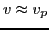

Next: Iterative method for solving Up: Notes on Landau damping Previous: Density fluctuation induced by
In this section, I reproduced Stix's derivation of Landau damping from the view of test particles[4]. This method is essentially similar to the particle simulation presented in Sec. 1. The differences are that (1) we use approximate analytical method, instead of numerical one, to solve the nonlinear equation of motion of particles in wave field; (2) we focus on the particles in the resonant region ; The analytical method used here is the iterative methods often used in approximate theories[2] (Note that Stix's method is a mix of expansion and iterative methods while the method used here is a standard iterative method[2]). The contribution of the wave field is retained to the second order of the amplitude.